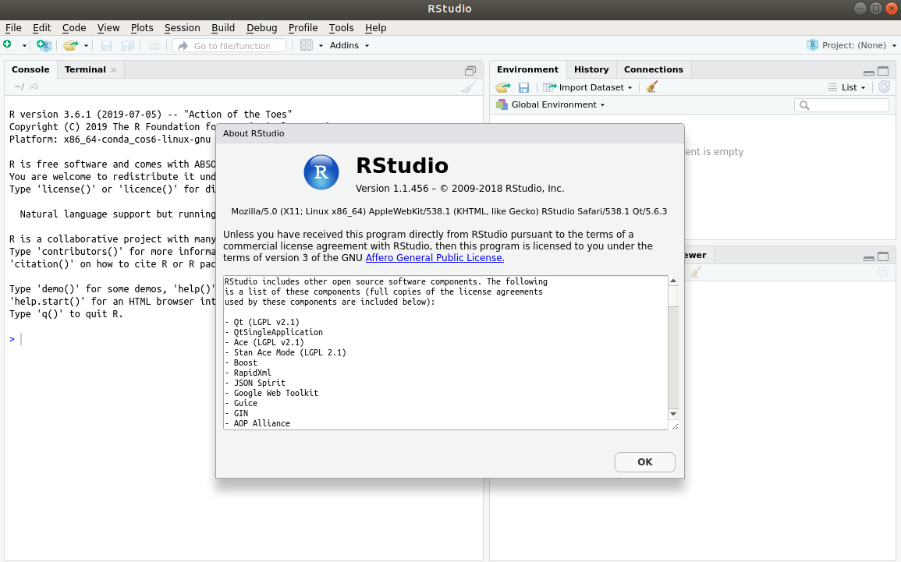

Virtual Memory Size of Launching RStudio on Hoffman2 Cluster
2020-06-11
We report that the virtual memory size of launching RStudio (version 1.1.456) is approximately 2.3GB (gigabytes) without loading any user data on Hoffman2 Cluster’s compute nodes. This is compared to RStudio version 0.98, which consumes approximately 1.6GB of virtual memory at launch time. The implication is that a job will have to request at least this much memory in order to launch RStudio successfully.
We launched RStudio 1.1.456 distributed by Anaconda using the following commands:
$ source /u/local/Modules/default/init/bash
$ module load anaconda3/2019.03
$ source $CONDA_DIR/etc/profile.d/conda.sh
$ conda activate rstudio
$ rstudio
The virtual memory size reading was from the top command. We have tested
Rstudio on various CPU models, including Intel Gold (Skylake), Intel E5-2670
and AMD-6136. The virtual memory size was approximately the same across
different CPU models.
